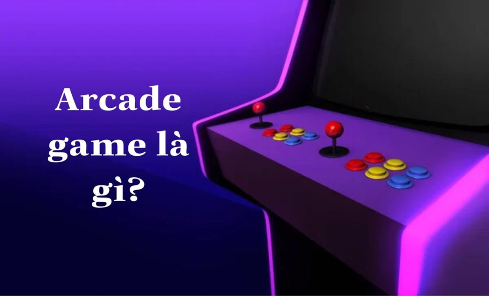

Home – Trò chơi Sbotop – Arcade game là gì? Thông tin về trò chơi Arcade
ARCADE GAME LÀ GÌ? THÔNG TIN VỀ TRÒ CHƠI ARCADE
Arcade game là gì? Thông tin về trò chơi Arcade sẽ được chia sẻ đầy đủ trong bài viết dưới đây. Arcade game là một trò chơi được biết đến với đồ họa và âm thanh sống động, là một phần quan trọng của lịch sử và văn hóa trò chơi điện tử, và vẫn còn được nhiều người yêu thích cho đến ngày nay.
Arcade game là gì?
Arcade game là gì?
Theo như chúng tôi được biết, Arcade game là một loại trò chơi điện tử được thiết kế để chơi tại các cơ sở giải trí, như các quán bar, nhà hàng, rạp chiếu phim, hay các trung tâm mua sắm. Trò chơi này được trang bị đầy đủ các nút bấm, cần điều khiển, hoặc các thiết bị nhập liệu khác để tương tác với trò chơi.
Arcade game có nguồn gốc từ các trò chơi máy tính đầu tiên, như Spacewar! (1962) hay Pong (1972), được chơi trên các máy tính lớn hoặc các bảng mạch điện tử. Những trò chơi này sau đó được chuyển sang các máy chơi trò chơi đặt tại các cơ sở giải trí, được gọi là arcade cabinet. Arcade cabinet là một loại máy chơi trò chơi có màn hình, loa, bộ điều khiển, và khe cắm tiền để bắt đầu trò chơi.
Thông tin về trò chơi Arcade
Thông tin về trò chơi Arcade
Arcade game là một loại trò chơi điện tử hấp dẫn và thú vị, nhưng cũng có nhiều thông tin thú vị về chúng mà bạn có thể chưa biết. Sau đây là một số thông tin về trò chơi arcade mà bạn có thể quan tâm:
Lịch sử và đặc điểm của Arcade
Arcade game bắt đầu phát triển mạnh mẽ vào những năm 1970 và 1980, được gọi là thời kỳ vàng của trò chơi arcade. Đây là thời kỳ mà nhiều trò chơi arcade kinh điển ra đời, như Pac-Man, Space Invaders, Donkey Kong, hay Asteroids. Những trò chơi này thu hút hàng triệu người chơi, và tạo ra doanh thu khổng lồ cho các nhà sản xuất và các cơ sở giải trí.
Hiện nay, Arcade game có ảnh hưởng lớn đến sự phát triển của các loại trò chơi điện tử khác, như trò chơi máy tính cá nhân, trò chơi điện tử cầm tay, hay trò chơi điện thoại di động. Arcade game có một số đặc điểm riêng biệt so với các loại trò chơi điện tử khác, như:
Các loại Arcade phổ biến hiện nay
Dù đã có lịch sử lâu đời, nhưng arcade game vẫn không ngừng đổi mới và phát triển để phù hợp với nhu cầu và sở thích của người chơi hiện đại. Hiện nay, có nhiều loại arcade game phổ biến, như:
Hướng dẫn chơi Arcade tại nhà cái Sbotop
Hướng dẫn chơi Arcade tại nhà cái Sbotop
Nếu bạn là một fan của trò chơi arcade, và muốn trải nghiệm chúng một cách tiện lợi và an toàn, bạn có thể chơi arcade tại nhà cái Sbotop uy tín. Để chơi arcade tại nhà cái Sbotop, bạn chỉ cần thực hiện các bước sau:
.jpg)
Hoàn tất thông tin đăng ký Sbotop
.jpg)
Nạp tiền vào hệ thống cá cược
Trên đây là bài viết giải đáp về Arcade game là gì? Thông tin về trò chơi Arcade đầy đủ và chi tiết. Chúc bạn có những giây phút chơi trò chơi arcade vui vẻ và may mắn tại nhà cái Sbotop này nhé! Nếu có thắc mắc gì hãy liên hệ CSKH SBOTOP để được giải quyết nhé!